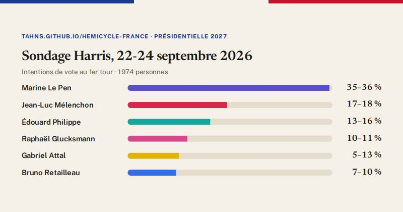

Présidentielle 2027 · sondage
Intentions de vote au 1er tour : Harris, enquête du 22-24 septembre 2026

| Candidat | Intentions de vote |
|---|---|
| Marine Le Pen | 35 à 36 % |
| Jean-Luc Mélenchon | 17 à 18 % |
| Édouard Philippe | 13 à 16 % |
| Raphaël Glucksmann | 10 à 11 % |
| Gabriel Attal | 5 à 13 % |
| Bruno Retailleau | 7 à 10 % |
| François Hollande | 7 à 8 % |
| Éric Zemmour | 5 à 6 % |
| Marine Tondelier | 3 à 5 % |
| Fabien Roussel | 2 à 3 % |
| Nicolas Dupont-Aignan | 2 % |
| Nathalie Arthaud | 1 % |